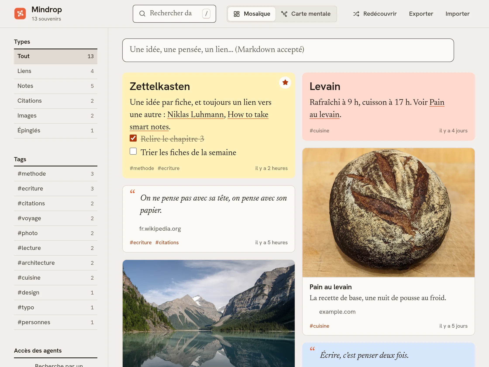
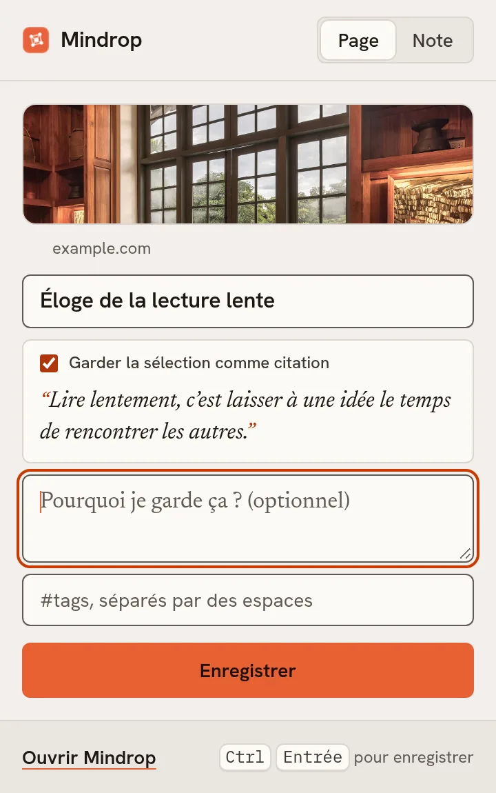
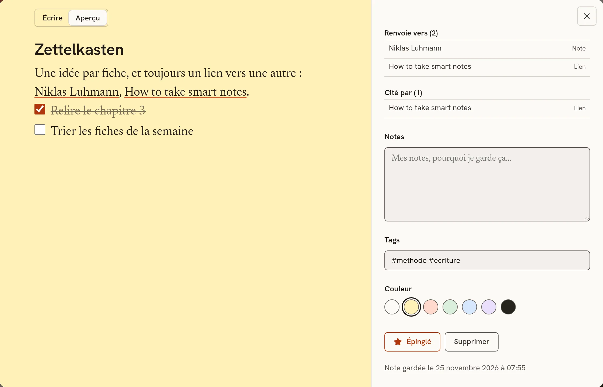
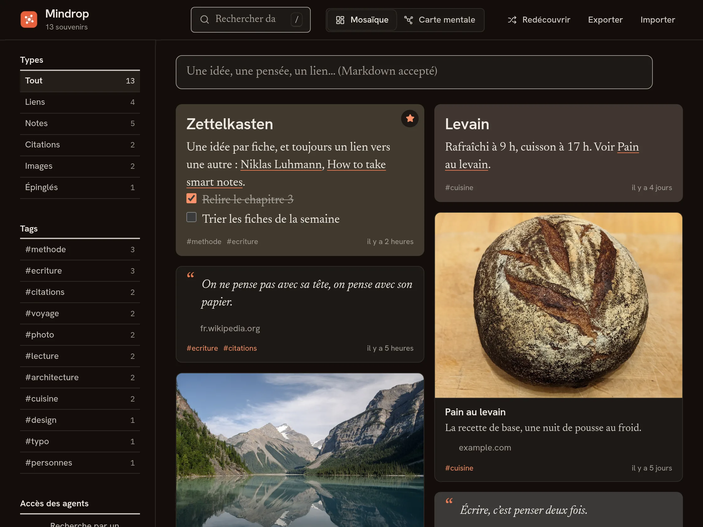

Ton second cerveau, dans ton navigateur.
Garde pages, notes et citations. Relie-les. Tout reste chez toi.

Un clic, c’est gardé.
- Alt+Shift+S
- La page, une note, tes #tags, et la sélection en citation.
- Alt+Shift+D
- La page, gardée tout de suite, sans fenêtre.
- Clic droit
- Une phrase, un lien ou une image, sur n’importe quelle page.
- Le texte de la page
- Gardé avec elle : la recherche retrouve l’article lui-même.


Des notes qui se citent.
Écris [[Titre]] : la note renvoie vers l’autre, et l’autre sait qui la cite.
Tous les tags, tous les liens, sur une carte.
En zoomant, les souvenirs sortent autour de leurs tags. Les courbes orange sont les liens entre notes.

Un agent IA peut y chercher.
Un serveur MCP en lecture seule : recherche tolérante, texte des pages, liens et tags. Un interrupteur coupe l’accès.
$ node mcp/install.mjs <extension-id>
$ claude mcp add mindrop \
-- node mcp/server.mjs
tools
search_memories get_memory
list_tags related_memoriesTes notes ne quittent pas ton navigateur.
- 100 % local
- Ni compte ni serveur : tout vit dans ton navigateur.
- Sauvegardé
- Une copie complète sur ton disque après chaque changement, trente jours gardés.
- Une recherche qui pardonne
- Accents, pluriels, variantes et fautes de frappe, jusque dans le texte des pages.
- Logiciel libre
- AGPL-3.0 : lis-le, modifie-le, partage-le.
L’installer en quatre étapes.
- Télécharge le dépôt depuis GitHub (Code, puis Download ZIP) et dézippe-le là où il restera.
- Ouvre
chrome://extensions, oubrave://extensions, et active le mode développeur. - Charge l’extension avec « Charger l’extension non empaquetée », puis choisis le dossier qui contient
manifest.json. - Épingle l’icône orange dans la barre d’outils, puis Alt+Shift+S sur une page.
